Contents
Exercice 1
Q1
matrix = imread("fundus.png"); figure(),imshow(matrix) title('Disque optique dans une image fundus') figure(),mesh(matrix) title('Intensite') % Q2 type filtre_gaussien.m %Q3 masque1 = 1/16*[1 2 1; 2 4 2 ; 1 2 1]; masque2 = 1/100*[1 2 4 2 1 ; 2 4 8 4 2 ; 4 8 16 8 4 ; 2 4 8 4 2 ; 1 2 4 2 1]; masque3 = 1/484*[1 2 4 8 4 2 1 ; 2 4 8 16 8 4 2 ; 4 8 16 32 16 8 4 ; 8 16 32 64 32 16 8 ; 4 8 16 32 16 8 4 ; 2 4 8 16 8 4 2 ; 1 2 4 8 4 2 1]; image_filtre1 = filtre_gaussien(matrix,masque1); figure(), imshow(image_filtre1,[]) title('Image filtree avec masque 3x3') figure(), mesh(image_filtre1) title('Intensite image filtree masque 3x3') image_filtre2 = filtre_gaussien(matrix,masque2); figure(), imshow(image_filtre2,[]) title('Image filtree avec masque 5x5') figure(), mesh(image_filtre2) title('Intensite image filtree masque 5x5') image_filtre3 = filtre_gaussien(matrix,masque3); figure(), imshow(image_filtre3,[]) title('Image filtree avec masque 7x7') figure(), mesh(image_filtre3) title('Intensite image filtree masque 7x7') % Q4 masque = [1 2 4 8 16 8 4 2 1 ; 2 4 8 16 32 16 8 4 2 ; 4 8 16 32 64 32 16 8 4 ; 8 16 32 64 128 64 32 16 8 ; 16 32 64 128 256 128 64 32 16; 8 16 32 64 128 64 32 16 8; 4 8 16 32 64 32 16 8 4 ; 2 4 8 16 32 16 8 4 2 ; 1 2 4 8 16 8 4 2 1]; m4_coef = sum(masque, 'all'); masque4 = 1/m4_coef*masque; image_filtre4 = filtre_gaussien(matrix, masque4); figure(), imshow(image_filtre4,[]) title('Image filtree avec masque 9x9') figure(), mesh(image_filtre4) title('Intensite image filtree masque 9x9') %L'augmentation de la valeur de l'ecart-type de la gaussienne entraine une %une plus grande propagation du bruit dans l'image. % L'image originale est beaucoup plus claire que celle sur laquelle le % masque a ete applique. Les contours sont moins distincts et les details % moins visibles. Il est egalement possible de voir dans le graphe % d'intensite du masque 9x9 qu'il y a moins de pics d'intensite, (les % formes sont plus arrondies), ce qui signifie que l'image contient moins % de details. % Q5 type filtre_laplacien.m % Q6 type rehaussement_contour.m % Q7 K = 1.5; image_filtree5 = rehaussement_contour(matrix, masque2, K); figure(), imshow(image_filtree5, []) title('Image rehaussee'); image_gaussienne = conv2(matrix, masque2, 'same'); image_filtree_L = filtre_laplacien(image_gaussienne); figure(), imshow(image_filtree_L, []) title('Image filtre Laplacien'); % On peut voir dans l'image rehaussee que les contours sont moins definis % que dans l'image originelle, bien que cela ne soit pas le resultat % escompte. Cela s'explique par le fait que la taille du filtre gaussien % serait trop grande, donc on enleve trop de details en tentant de % supprimer le bruit de l'image et le filtre Laplacien ne suffit pas pour % afficher clairement les contours. % Q8 for k = 0:10 image_filtree_k = rehaussement_contour(matrix, masque2, k); figure(), imshow(image_filtree_k, []) title(['Image rehaussee k=', num2str(k)]); pause(0.5) end % Le probleme lorsque la valeur de K est trop élevée est que les détails de % l'image deviennent de plus en plus "pixelisés". On perd une certaine % qualité de la résolution.
function [image_filtre] = filtre_gaussien(image,masque) image_filtre = conv2(image,masque,'same'); end function [image_filtre] = filtre_laplacien(image) masque = [-1 -1 -1 ; -1 8 -1 ; -1 -1 -1]; image_filtre = conv2(image, masque, 'same'); end function [image_r] = rehaussement_contour(image,masque, K) Ig = conv2(image, masque, 'same'); image_filtree = filtre_laplacien(Ig); image_r = Ig + K*image_filtree; end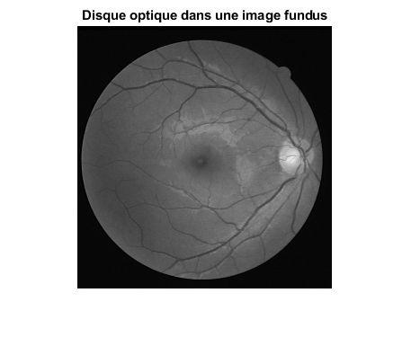 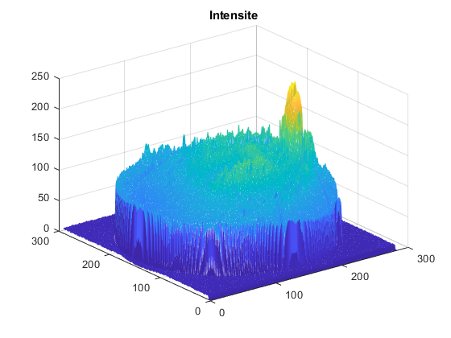 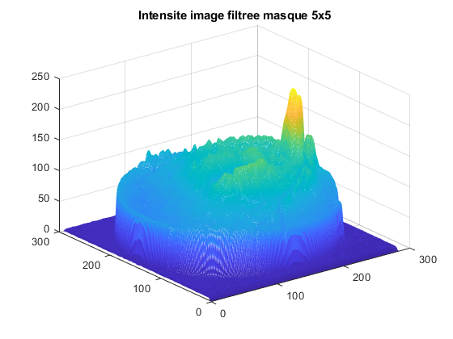 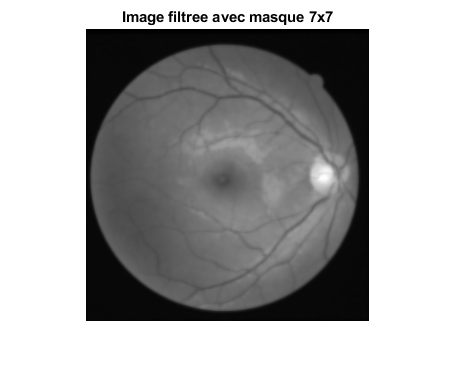 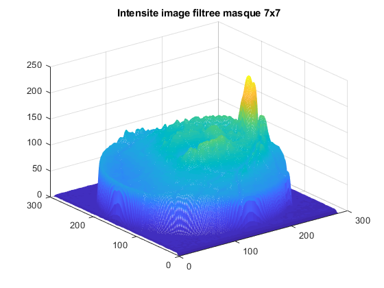 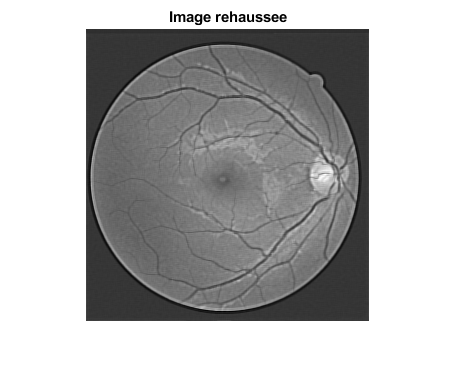 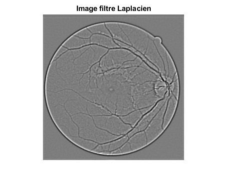 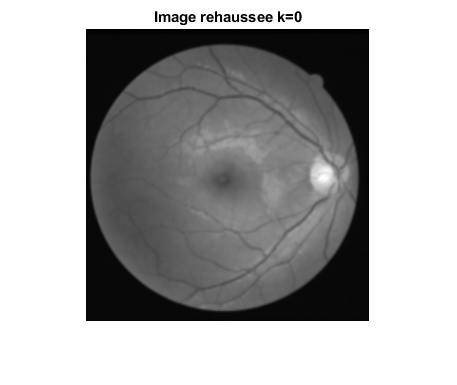 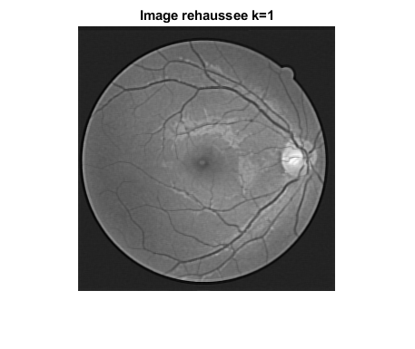 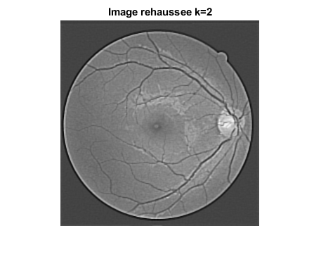 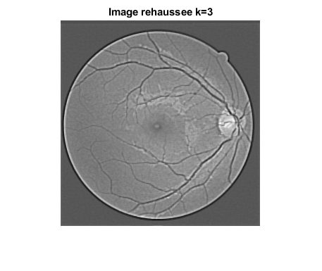 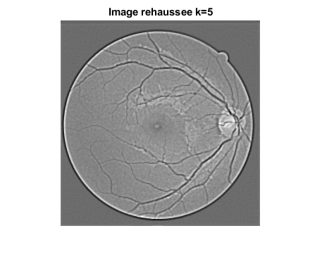 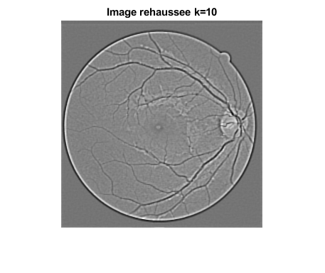
Exercice 2
matrix = imread("fundus.png"); % Q1 seuil = 150; image_binarisee = binariser(matrix, seuil); figure(), imshow(image_binarisee) title('Image binarisée'); type binariser.m % Q2 rayon = 2; elem_struct = strel('disk', rayon); fermeture = imclose(image_binarisee, elem_struct); figure(), imshow(fermeture) title('Fermeture de limage binarisée'); % Q3 for i = 1:20 elem_struct = strel('disk', i); fermeture = imerode(image_binarisee, elem_struct); subplot(5,4,i); imshow(fermeture, []) title(['Image érodée avec un rayon de ', num2str(i)]); end % Q4 % la meilleure approximation est avec un rayon de 11 elem_structurel = strel('disk', 11); fermeture2 = imerode(image_binarisee, elem_structurel); figure(), imshow(fermeture2, []) title('Image érodée avec un rayon de 11'); [x1,y1] = ginput(1); fprintf('Les coordonnées du centre du disque optique sont %d et %d \n', x1, y1) % Q5 % Le rayon du disque optique en d'environ 11,5 pixels. Étant donné que nous % considérons que le disque optique est approximativement un cercle, nous utilisons % un élément structurant qui est également un disque. Lors de l'érosion de % l'image, on peut constater que le centre du disque optique disparait lorsque % le rayon de l'élément structurant passe de 11 à 12 pixels.
function [image_binarisee] = binariser(image, seuil)
image(image>=seuil)=255;
image(image<seuil)=0;
image_binarisee = image;
end
Les coordonnées du centre du disque optique sont 240 et 1.490000e+02
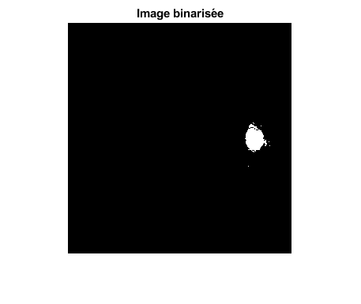 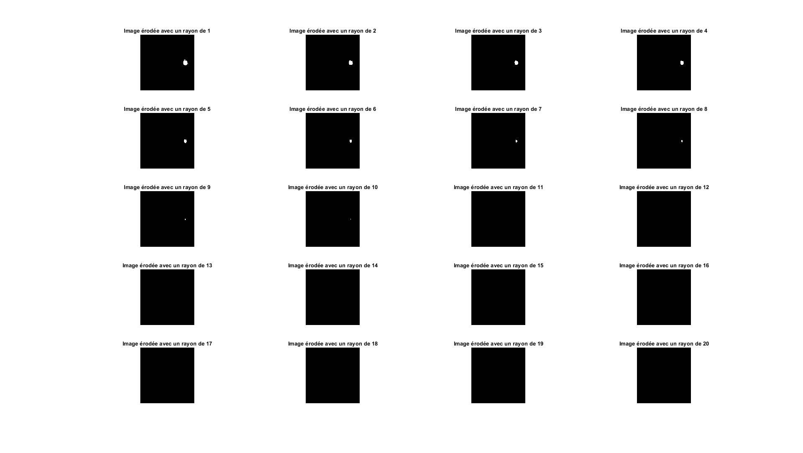 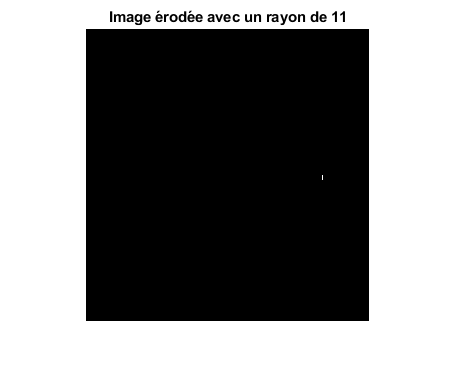 Exercice 3
% Q1 load mat_barre.mat; figure(), subplot(1, 3, 1); imshow(mat_barre_diag, []) subplot(1, 3, 2) imshow(mat_barre_x, []) subplot(1, 3, 3) imshow(mat_barre_y, []) sgtitle('Barres diagonale, horizontale et verticale') % Q2 fft_diag = fft2(mat_barre_diag); fft_diag = fftshift(fft_diag); fft_diag_norm = normalize(abs(fft_diag)); fft_hor = fft2(mat_barre_x); fft_hor = fftshift(fft_hor); fft_hor_norm = normalize(abs(fft_hor)); fft_ver = fft2(mat_barre_y); fft_ver = fftshift(fft_ver); fft_ver_norm = normalize(abs(fft_ver)); figure(), subplot(1, 3, 1) imshow(fft_diag_norm, []) subplot(1, 3, 2) imshow(fft_hor_norm, []) subplot(1, 3, 3) imshow(fft_ver_norm, []) sgtitle('Modules de la FFT de la barre diagonale, horizontale et verticale') type normalize.m % Q3 % Étant donné que les barres sur lesquelles nous appliquons la fft et la % normalisation peuvent être considérées comme des rectangles, la réponse % que nous devrions recevoir est un sinus cardinal. C'est ce que nous % pouvons observer dans les 3 images générées. Il est également possible de % constater que les images résultantes ont toutes été tournées dans le sens % inverse de la fft. % Q4 % Comme mentionné lors de la question précédente, le résultat de la fft % d'un signal d'entrée représentant un rectangle donne un sinus cardinal, % ce qui explique la présence de zéros dans l'image finale. % Q5 image1 = create_image(12, 80); image2 = create_image(12, 12); image3 = create_image(80, 12); figure(), subplot(2, 3, 1) imshow(image1, []) title('Image 1'); subplot(2, 3, 2) imshow(image2, []) title('Image 2'); subplot(2, 3, 3) imshow(image3, []) title('Image 3'); sgtitle('Images créées sans FFT') fft_image1 = fft2(image1); fft_image1 = fftshift(fft_image1); fft_image1_norm = normalize(abs(fft_image1)); fft_image2 = fft2(image2); fft_image2 = fftshift(fft_image2); fft_image2_norm = normalize(abs(fft_image2)); fft_image3 = fft2(image3); fft_image3 = fftshift(fft_image3); fft_image3_norm = normalize(abs(fft_image3)); subplot(2, 3, 4) imshow(fft_image1_norm, []) subplot(2, 3, 5) imshow(fft_image2_norm, []) subplot(2, 3, 6) imshow(fft_image3_norm, []) sgtitle('Modules de la FFT des images créées') type create_image.m % Dans chaque image du module de la fft, on observe 4 points. Dans ces % images, on peut observer que tous les points qui sont alignés % verticalement correspondent aux lignes horizontales de l'image originale. % Il en est de même pour les points qui sont alignés horizontalement. Ces % derniers représentent les lignes verticales des images originales. Les % points que nous pouvons observer sont en fait les maximums de la % transformée de Fourrier d'un sinus. De plus, si nous agrandissons les % images, il est possible de voir des ondelettes autour de ces points. Cela % s'explique par le fait qu'il s'agit d'une fonction de Dirac. La position % des points est également liée à la fréquence du signal. De fait, les % points seront éloignés les uns des autres lorsque la fréquence sera % élevée, et ils seront rapprochés dans le cas où la fréquence est basse.
function [image_norm] = normalize(image)
max_image = max(image, [], 'all');
min_image = min(image, [], 'all');
[m,n] = size(image);
image_norm = image;
for i=1:m
for j=1:n
image_norm(i,j) = (image(i,j) - min_image) / (max_image - min_image);
end
end
end
function [image] = create_image(s1, s2)
image = zeros(256);
for i=1:256
for j=1:256
if i<128
image(i,j) = sin(2*pi*s1*j/256);
else
image(i,j) = sin(2*pi*s2*i/256);
end
end
end
end
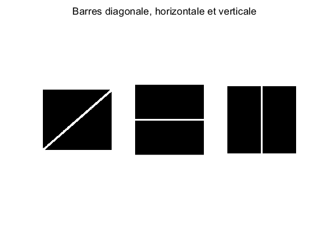 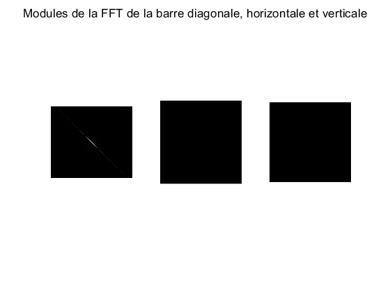 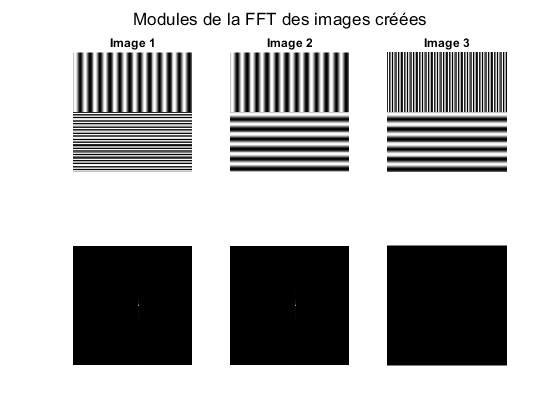 Exercice 4
% Q1 type filtrage_frequentiel.m % Q2 type filtrage_spatial.m % Q3 matrix = imread("koala.png"); d0 = 0.0398; image_filtree_freq = filtrage_frequentiel(matrix, d0); sigma = 4; image_filtree_spatial = filtrage_spatial(matrix, sigma); figure(), subplot(1, 2, 1) imshow(image_filtree_freq, []) title('Image filtrée dans le domaine fréquentiel'); subplot(1, 2, 2) imshow(image_filtree_spatial, []) title('Image filtrée dans le domaine spatial'); % Q4 % En observant les images résultantes du domaine fréquentiel et du domaine % spatial, ces dernières semblent tout à fait identiques, mis à part les % contours (cadre) de l'image du domaine spatial qui sont plus foncés. La % relation entre le domaine fréquentiel et le domaine spatial se fonde sur % le théorème de la convolution. Nous faisons une convolution pour le % filtre spatial avec l'image et nous faisons une multiplication dans le % domaine fréquentiel du filtre avec l'image encore une fois. En mettant en % relation les paramètres des exponentielles, il est possible de trouver % l'égalité fc = 1/(2pi*sigma), où fc est la fréquence de coupure. % Q5 % En analysant les images obtenues après l'application du filtre idéal et % butterworth, il est possible d'observer que l'image résultante du % butterworth est plus définie que celle du filtre idéal. Bien que les deux % soient très floues, il est plus facile de discerner les formes et % contours avec un butterworth. Cela s'explique par le fait que le filtre % butterworth coupe de façon moins sèche les contours des images. im1 = imread("koala-E4-Q5-ideal.jpg"); im2 = imread("koala-E4-Q5-butterworth.jpg"); figure(), subplot(1, 2, 1) imshow(im1, []) title('Image de koala avec filtre idéal'); subplot(1, 2, 2) imshow(im2, []) title('Image de koala avec filtre butterworth');
function [image_filtree] = filtrage_frequentiel(image, d0)
[m,n] = size(image);
[x1,y1] = freqspace([m,n], 'meshgrid');
u = x1/2;
v = y1/2;
spectre = fftshift(fft2(image));
H = exp((-u.^2-v.^2)./(2*d0^2));
conv_image = spectre.*H;
image_filtree = normalize(ifft2(ifftshift(conv_image)));
end
function [image] = filtrage_spatial(image, sigma)
hsize = 6 * sigma;
mask = fspecial('gaussian', hsize, sigma);
image = conv2(image, mask, 'same');
end
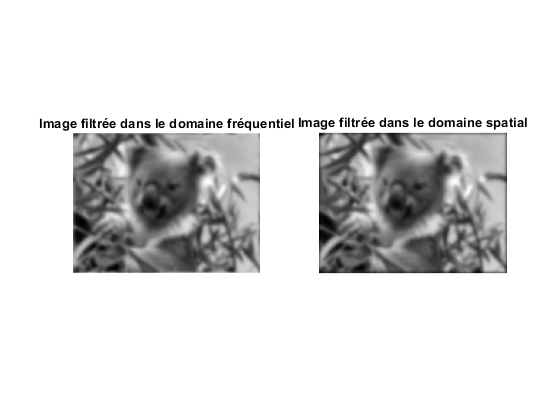 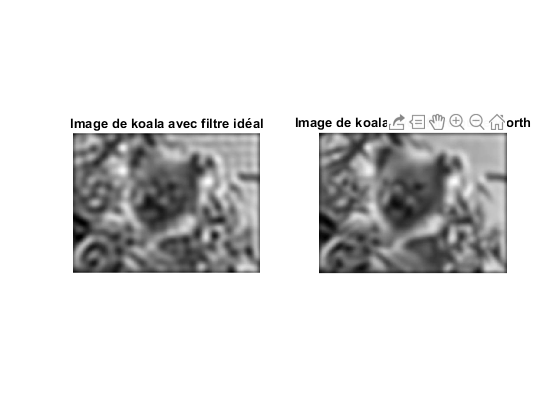 Exercice 5
% Q1 matrix = imread("XrayBar.jpg"); spectre_normal = fftshift(abs(fft2(matrix))); spectre_logarithmique = 1 + log(fftshift(abs(fft2(matrix)))); figure(), subplot(1, 2, 1) imshow(spectre_normal, []) title('Spectre normal de limage'); subplot(1, 2, 2) imshow(spectre_logarithmique, []) title('Spectre logarithmique de limage'); % Dans le spectre normal de l'image, nous observons un point en forme de % croix. Ce point ne nous fourni pas d'autes informations sur l'image que % la plus grand intensité du spectre, en général. Dans le spectre % logarithmique, nous observons une image brouillée où aucunes formes ne % sont discernables, mais dans laquelle on peut voir plusieurs points % lumineux. Ces points représentent les lignes diagonales de bruit qui % sont présentes dans l'image originale. % Q2 u = [1/8 1/4 3/8]; v = [1/8 1/4 3/8]; frequences_coupure = [0.03 0.02 0.01]; masque = filtre_selectif(matrix, frequences_coupure, u, v); figure() imshow(masque, []) title('Masque du filtre sélectif'); type filtre_selectif.m % Q3 spectre = fftshift(fft2(matrix)); image_filtree = normalize(ifft2(ifftshift(masque.*spectre))); figure() imshow(image_filtree, []) title('Image thoracique filtrée'); % Nous avons le résultat escompté. Les lignes diagonales de bruit ont % presque totalement disparu. Il est possible de les voir si on magnifie % l'image, et si on observe les contours de certaines structures de % l'image.
function [masque] = filtre_selectif(image, frequences_coupure, cx, cy)
[m,n] = size(image);
[x1,y1] = freqspace([m,n], 'meshgrid');
u = x1/2;
v = y1/2;
dim = size(cx);
masque = zeros();
for i=1:dim(2)
gauss_pos = exp(-((u-cx(i)).^2 + (v-cy(i)).^2)./(2*frequences_coupure(i).^2));
gauss_neg = exp(-((u+cx(i)).^2 + (v+cy(i)).^2)./(2*frequences_coupure(i).^2));
masque = masque + (gauss_pos + gauss_neg);
end
masque = 1 - masque;
end
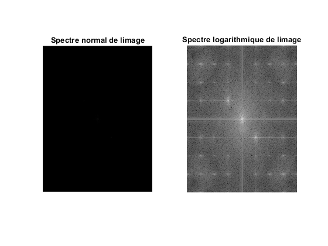 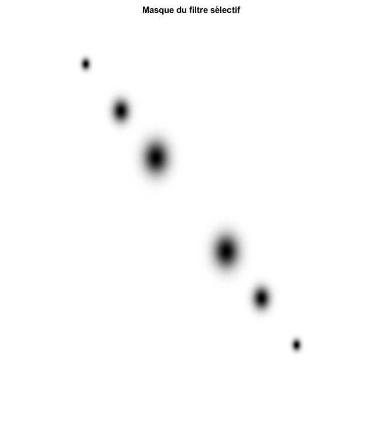 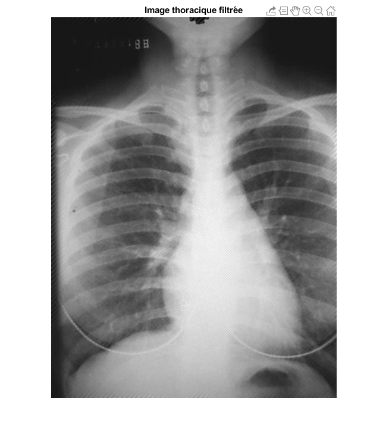